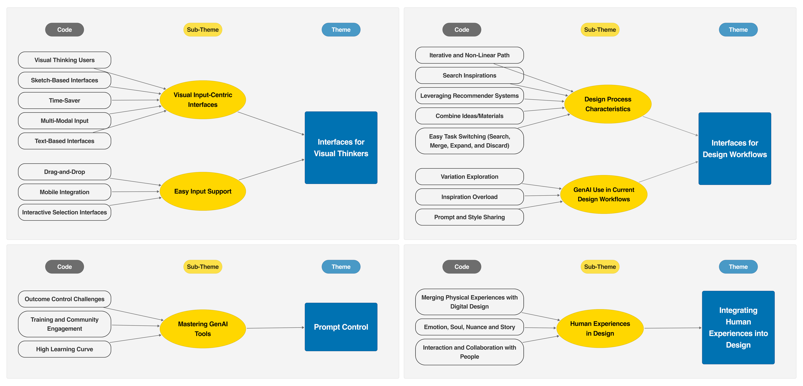

We Are Visual Thinkers, Not Verbal Thinkers!': A Thematic Analysis of How Professional Designers Use Generative AI Image Generation Tools


Venue. NordiCHI (2024)
Abstract. Generative artificial intelligence (GenAI) has become increasingly popular, influencing various creative domains. However, while broader societal perspectives have been analyzed, specific examinations of how practitioners utilize GenAI tools to enhance their current workflows remain limited. To address this gap, we conducted a qualitative study involving 16 professional designers from the automotive industry. We aimed to identify their challenges with existing GenAI image generation tools in daily design practices. Thematic analysis revealed four key themes: (1) the need for visual input-centric multi-modal interfaces that extend beyond textual prompts, (2) the lack of support for the iterative nature of design processes in GenAI tools, (3) difficulties in controlling prompts to achieve desired outputs, and (4) the significance of incorporating human experiences and emotions into design. Based on our findings, we propose and discuss potential design considerations for enhancing future GenAI image generation tool interfaces.
Link to this page: